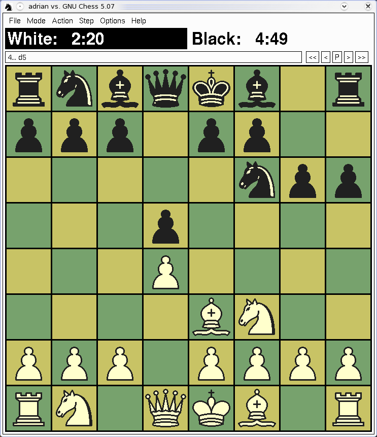
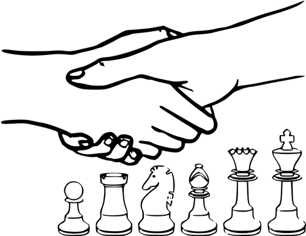

Quizzes and Puzzles
Do You Know Your Chess?
1. The quickest possible checkmate is in: A) 2 moves B) 1 move C) 3 moves D) 4 moves 2. Where did chess originate? A) India B) Russia C) Italy D) France
What is an alternate name for a rook? Which chess piece can only move diagonally? Which player has been ranked world number-one since 2011? How many knights does each player have at the start of a game? What is the highest title that a chess player can attain? What is the term for the first moves in a chess game?
Do You Know Your Players?
Name the top 5 current world champions’
Grand masters
Name the top 5 Women grand Masters
For Children
How Many Squares on a Chessboard? What Happens When a Pawn Reaches the Other Side?